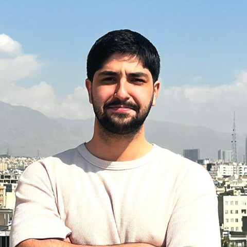
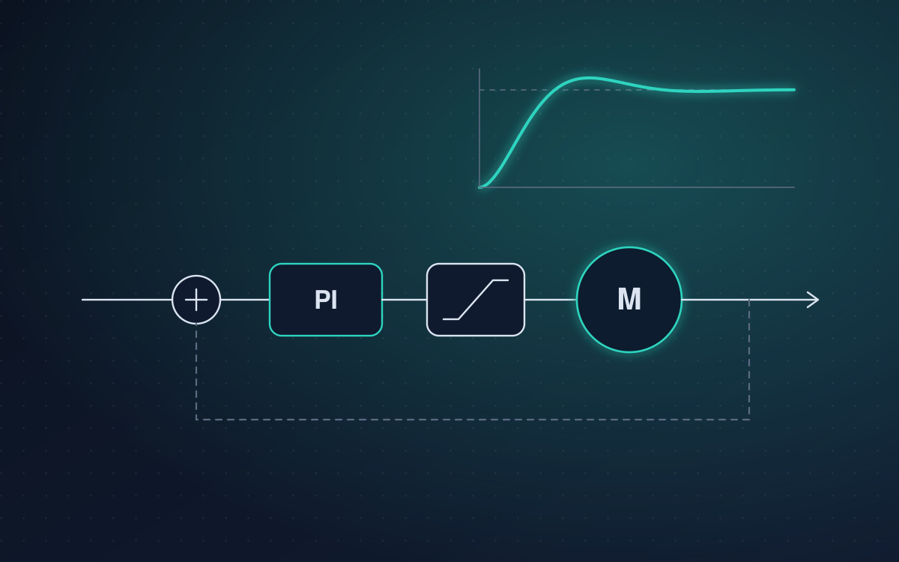
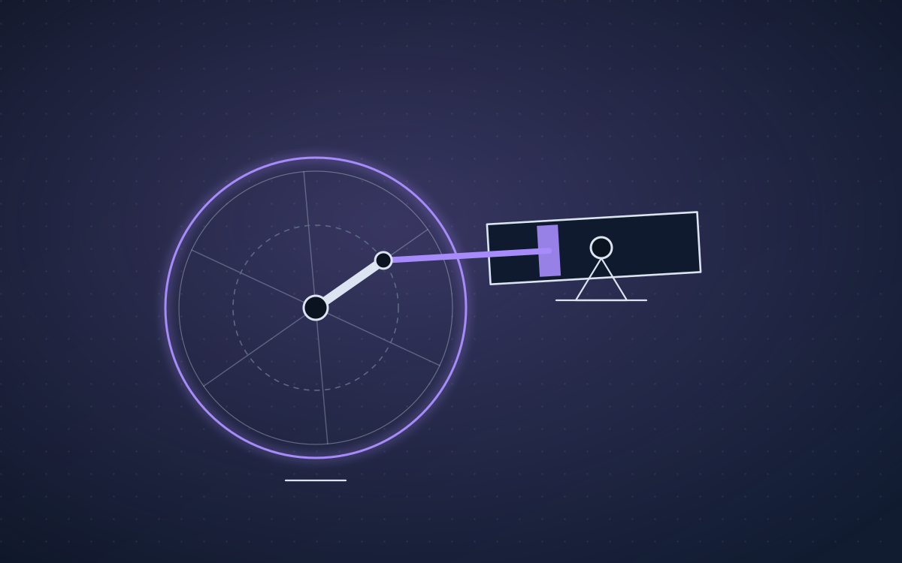
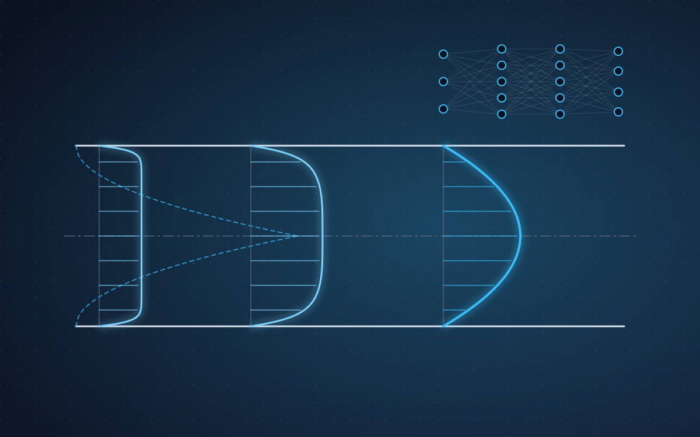
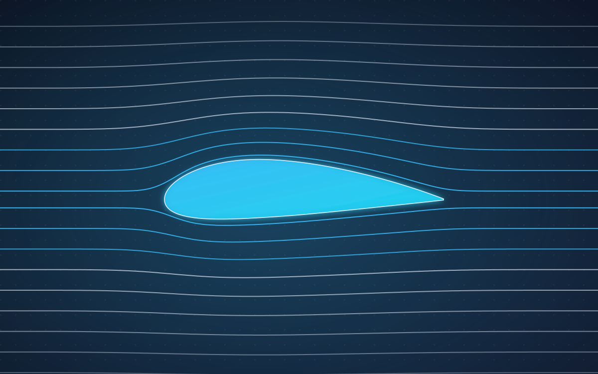
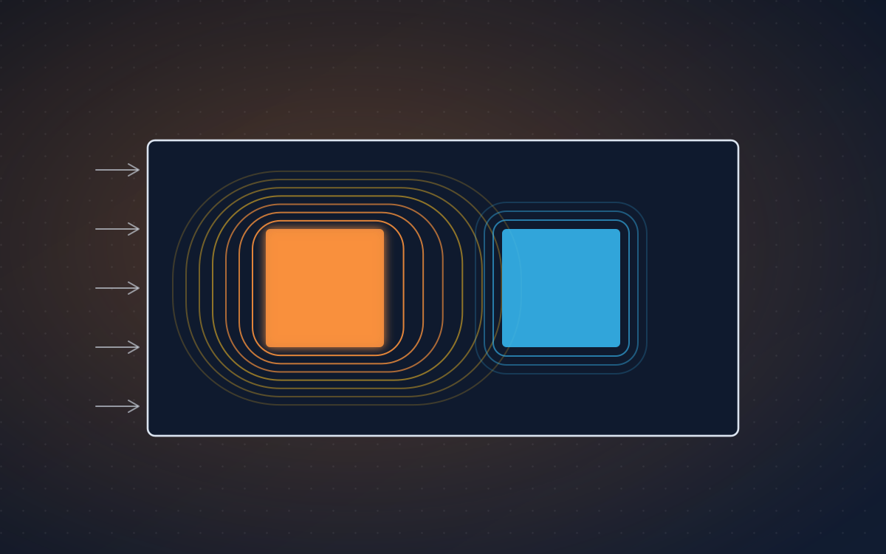
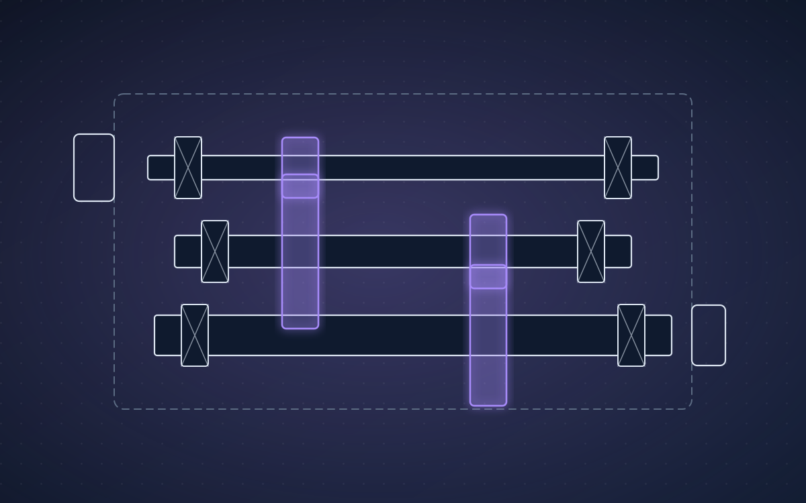
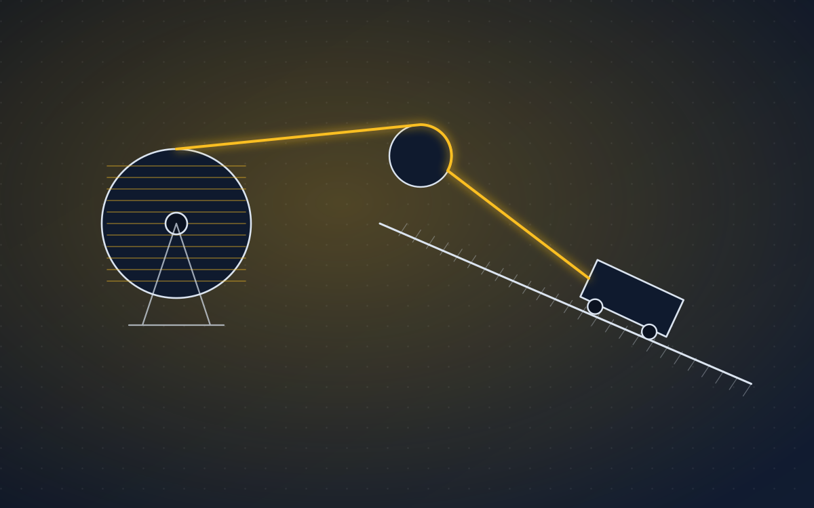

Mechanical Engineering · Sharif University of Technology
Alireza Amjadi
I work across dynamics, control and mechanical design, and I am heading toward wearable robotics: my B.Sc. project is on active ankle–foot orthoses.
About
Dynamics, control and biomechatronics.

I am a B.Sc. student in Mechanical Engineering at Sharif University of Technology, in the Dynamics, Control and Vibration track.
My projects cover dynamics and control, multibody simulation, machine design and computational mechanics. My B.Sc. project is on active ankle–foot orthoses, and I am looking for MSc positions from Fall 2027 in wearable robotics and biomechatronics.
- Education
- B.Sc. Mechanical Engineering
Sharif University of Technology - GPA
- 18.69 / 20
Ranked 11 of 126 - Tools
- OpenSim · MATLAB, Simulink, Simscape · ANSYS · SolidWorks · CATIA · Python
Research
Wearable robots for human gait.
B.Sc. project · in progress
Active ankle–foot orthoses
Modelling and simulation of wearable robots and exoskeletons in OpenSim, with Prof. Farzam Farahmand. The project is in its literature-review stage; the musculoskeletal modelling is my part of the work.
- Wearable robotics
- Exoskeletons and orthoses
- Biomechanics
- Control
- Rehabilitation robotics
Projects
Selected work.
Course projects in dynamics, control, simulation and machine design, each with a full technical report.

DC Motor Speed Control
Physics-based model of a separately excited DC motor, checked against theory, then closed with a PI speed controller.
View project
Pump Mechanism and Flywheel
Simscape Multibody model of an oscillating-cylinder pump and a flywheel that keeps its speed fluctuation under 10 %.
View project
3D PINN for Pipe Flow
A three-dimensional physics-informed neural network, written from scratch in NumPy, for developing laminar pipe flow.
View project
Airfoil Flow, Three Methods
Flow around NACA airfoils with ANSYS Fluent, physics-informed neural networks and a source–sink method.
View project
Hybrid Cooling of Power Electronics
A transient finite-volume solver in MATLAB for a liquid–air cooled heat sink, validated with ANSYS.
View project
Gearbox: Gear Design
Helical and bevel gears designed for bending and surface fatigue, and the final layout of the gearbox.
View project
Gearbox: Shafts and Bearings
Shafts, keys, SKF bearings and the welded housing of a three-shaft industrial gearbox.
View project
Mine Haulage Winch
Belts, wire rope, chain, drum and chassis of a winch that hauls a 5-tonne cart up a mine tunnel.
View project
Fork-Mounted Jib Crane
A demountable jib crane for a 3-tonne forklift: beams, pins, welds and bolted joints.
View projectContact
Let’s talk about wearable robotics.
Open to MSc positions and research collaborations from 2027.